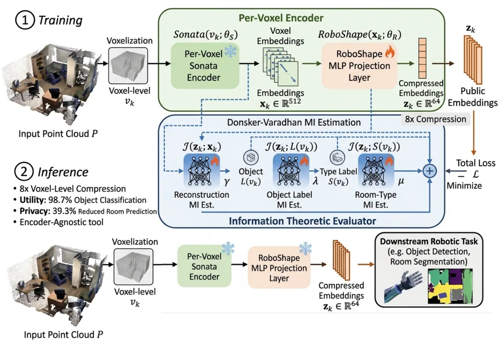
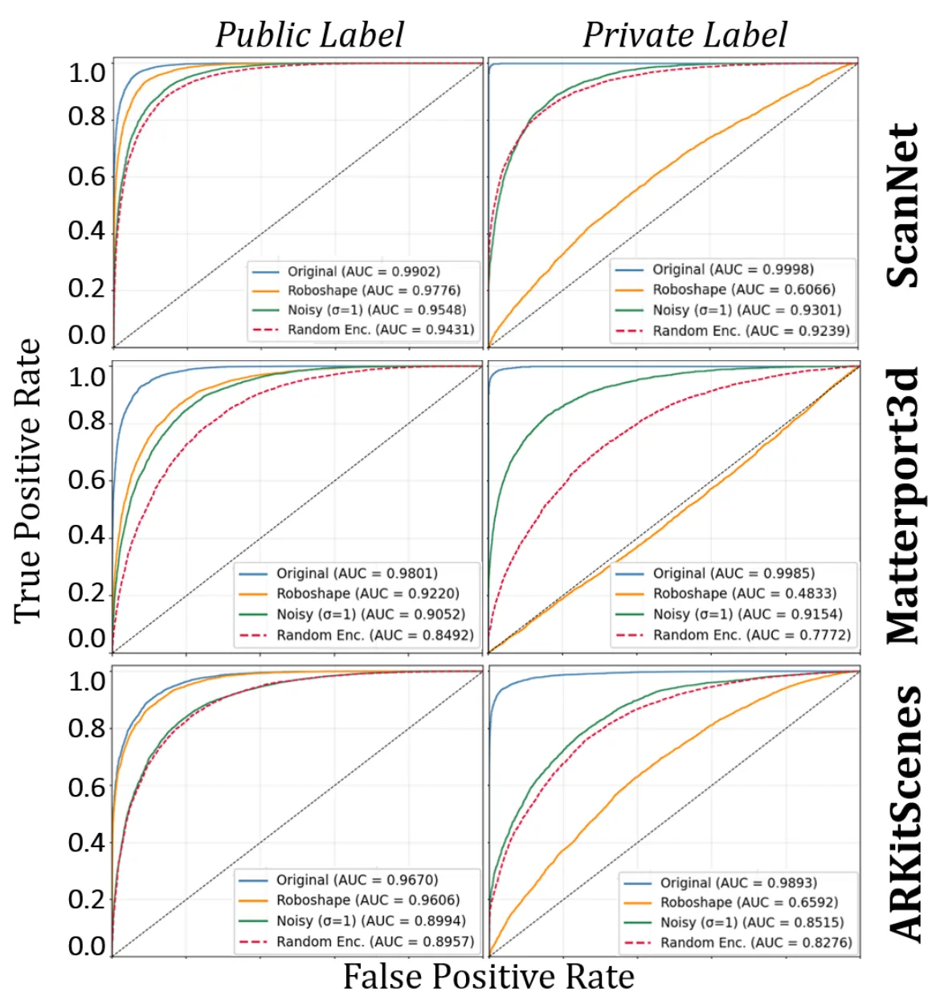
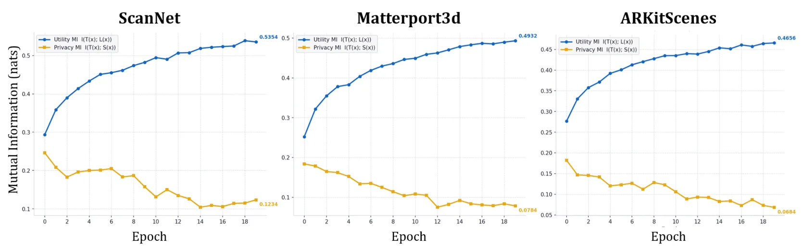
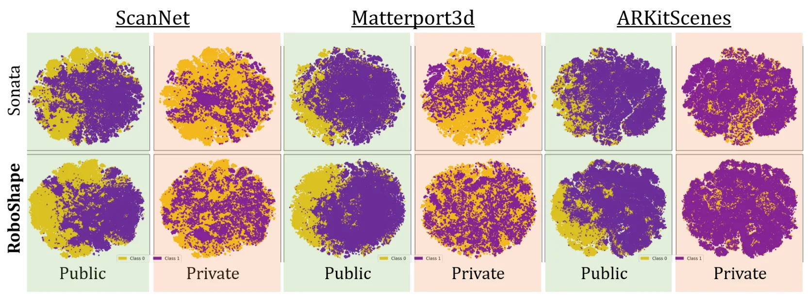
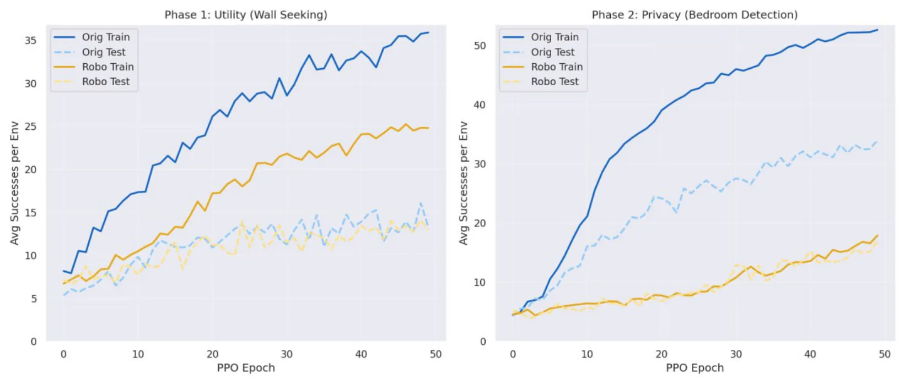

RoboShape：面向隐私保护机器人感知的信息论点云表示RoboShape: Information-Theoretic Point Cloud Representations for Privacy-Aware Robot Perception
直接处理机器人点云表示、压缩和部署隐私，兼顾表征效用与敏感空间信息泄露；但不是新的 SLAM 后端。
一句话工作总结
将点云表示压缩与隐私属性抑制统一起来，适合关注协同建图、云端规划和机器人感知数据传输的读者。
摘要
RoboShape 在冻结的 Sonata 编码器之后加入信息论压缩头，以 Donsker–Varadhan 互信息估计同时保留目标理解信息、压低敏感属性信息。论文报告嵌入体积缩小 87.5%，物体分类效用保留 98.7%，敏感属性预测在三个室内 LiDAR 数据集上下降 39.3%。
With the increased adoption of robotic agents operating in human environments by scanning and sharing 3D representations (e.g., for fleet learning, cloud-based planning, or collaborative mapping), collected point clouds reveal not just the objects in a scene but also sensitive spatial context, such as room function or information that occupants never consented to disclose. Traditional point cloud encoders offer no principled control over this: either all is preserved, or none. Hence, we introduce RoboShape, an information theory guided compression head following the frozen {\tt Sonata} encoder. We project voxel-level embeddings using the Donsker-Varadhan formulation of mutual information (MI). Specifically, we maximize the MI between embeddings and object-level understanding while minimizing it for private attributes. RoboShape leads to 87.5\% smaller embeddings that retain 98.7\% of object classification utility while collapsing sensitive attribute predictions by 39.3\% across the three real-world indoor LiDAR datasets. Its privacy-preserving embeddings are cheaper to transmit over the network or to train a model for any downstream tasks. We release the RoboShape codebase to give the robotics community a practical, encoder-agnostic tool for building perception pipelines that are compact, privacy-aware, and deployment-ready.
中文解读摘录
- 中文名：RoboShape：面向隐私保护机器人感知的信息论点云表示
- 方向：点云表示、机器人感知、信息瓶颈、协同建图。
- 要点：在冻结 Sonata 编码器后加入信息论压缩头，同时保留目标理解信息并抑制敏感属性信息；报告嵌入体积缩小 87.5%、物体分类效用保留 98.7%，敏感属性预测下降 39.3%。
- 判断：对云端规划、协同建图和机器人感知数据传输有直接价值，但不是新的 SLAM 后端。
图表/页面预览
{kind=link}

{kind=link}

{kind=link}

{kind=link}

{kind=link}
